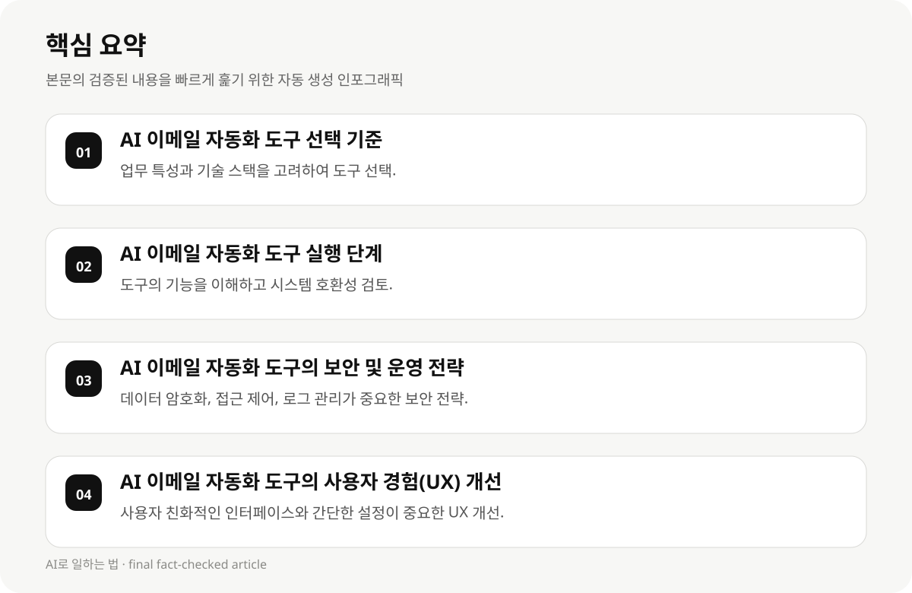

AI 이메일 자동화 도구 선택 기준 #
AI 이메일 자동화 도구를 선택할 때는 업무 특성, 기술 스택, 예산, 기존 시스템의 호환성 등을 고려해야 합니다. 예를 들어, 기존 시스템과 호환성이 높은 도구를 선택하면 유지보수 비용이 줄 수 있습니다.
개발자들이 주로 사용하는 도구 중에는 API 기반의 도구가 많습니다. 이는 기존 시스템과의 연동이 용이하며, 확장성도 높습니다. 예를 들어, Robotomail은 API를 통해 이메일을 전송하고 관리할 수 있어 실무에서 유용합니다.
보안 및 데이터 보호를 고려할 때는 암호화 기능, 접근 제어, 이메일 전송 로그 관리 등이 중요합니다. 이에 따라, Octolens의 AI 암호화 기능은 보안 전략에 유리합니다.
AI 이메일 자동화 도구의 선택 기준은 업무 특성, 기술 스택, 예산, 기존 시스템의 호환성 등을 고려해야 합니다. 예를 들어, 기존 시스템과 호환성이 높은 도구를 선택하면 유지보수 비용이 줄 수 있습니다.
AI 이메일 자동화 도구의 보안 및 운영 전략은 데이터 암호화, 접근 제어, 이메일 전송 로그 관리 등이 중요합니다. 이에 따라, Octolens의 AI 암호화 기능은 보안을 강화할 수 있습니다.
- 업무 특성과 기술 스택을 고려하여 도구 선택.
- API 기반 도구는 시스템 호환성과 확장성에 유리.
- 보안 기능, 접근 제어, 로그 관리가 중요한 보안 전략.
AI 이메일 자동화 도구 실행 단계 #
AI 이메일 자동화 도구를 실행할 때는 먼저 도구의 기능을 이해하고, 기존 시스템과의 연동을 검토해야 합니다. 예를 들어, Saleshandy는 B2B 고객 탐색 및 콜 애널리틱스를 제공하며, 이는 실무에서 유용합니다.
실행 단계에서는 도구의 설정, 이메일 템플릿, 이메일 전송 루틴 등을 구성해야 합니다. 이 과정에서 주의해야 할 점은 이메일의 정확성과 편의성입니다.
AI 이메일 자동화 도구는 사용자 경험(UX)에 영향을 줄 수 있으므로, 간단한 설정과 직관적인 인터페이스가 중요합니다.
AI 이메일 자동화 도구의 실행 단계는 먼저 도구의 기능을 이해하고, 기존 시스템과의 연동을 검토해야 합니다. 예를 들어, Saleshandy는 B2B 고객 탐색 및 콜 애널리틱스를 제공하며, 이는 실무에서 유용합니다.
AI 이메일 자동화 도구의 실행 단계에서는 도구의 설정, 이메일 템플릿, 이메일 전송 루틴 등을 구성해야 합니다. 이 과정에서 주의해야 할 점은 이메일의 정확성과 편의성입니다.
- 도구의 기능을 이해하고 시스템 호환성 검토.
- 이메일 템플릿, 전송 루틴 구성.
- 사용자 경험(UX)을 고려한 간단한 설정.
AI 이메일 자동화 도구의 보안 및 운영 전략 #
AI 이메일 자동화 도구의 보안 전략은 데이터 암호화, 접근 제어, 이메일 전송 로그 관리 등이 중요합니다. 예를 들어, Octolens의 AI 암호화 기능은 보안을 강화할 수 있습니다.
운영 전략에서는 도구의 확장성, 유지보수 비용, 사용자 교육이 필요합니다. 이에 따라, Robotomail은 API 기반으로 확장성이 높은 도구로 실무에서 유용합니다.
보안 및 운영 전략은 도구의 기능, 사용자 수, 데이터 유형 등에 따라 달라질 수 있습니다.
AI 이메일 자동화 도구의 사용자 경험(UX) 개선은 사용자 친화적인 인터페이스와 간단한 설정이 필요합니다. 예를 들어, Robotomail은 API 기반으로 사용자 친화적인 인터페이스를 제공하며, 이는 실무에서 유용합니다.
AI 이메일 자동화 도구의 사용자 교육은 사용자의 편의성과 효율성을 높이기 위해 중요합니다. 이에 따라, Octolens의 AI 암호화 기능은 사용자 피드백을 통해 개선될 수 있습니다.
- 데이터 암호화, 접근 제어, 로그 관리가 중요한 보안 전략.
- 도구의 확장성, 유지보수 비용, 사용자 교육이 운영 전략의 핵심.
- 보안 및 운영 전략은 도구의 기능, 사용자 수, 데이터 유형에 따라 달라질 수 있습니다.

AI 이메일 자동화 도구의 사용자 경험(UX) 개선 #
AI 이메일 자동화 도구의 사용자 경험(UX)은 사용자의 편의성과 효율성을 높이기 위해 중요합니다. 예를 들어, 사용자가 간단한 설정을 통해 도구를 사용할 수 있는 인터페이스가 필요합니다.
UX 개선은 사용자 교육, 도구의 직관적인 인터페이스, 사용자 피드백을 통해 이루어질 수 있습니다. 이에 따라, Robotomail은 API 기반으로 사용자 친화적인 인터페이스를 제공합니다.
사용자 경험(UX) 개선은 도구의 기능, 사용자 수, 데이터 유형에 따라 달라질 수 있습니다.
AI 이메일 자동화 도구의 보안 및 운영 전략은 도구의 기능, 사용자 수, 데이터 유형 등에 따라 달라질 수 있습니다. 예를 들어, Octolens의 AI 암호화 기능은 보안을 강화할 수 있습니다.
AI 이메일 자동화 도구의 성능 및 효과는 실제 적용 시에 따라 달라질 수 있습니다. 예를 들어, Saleshandy는 852M+ B2B 고객을 대상으로 한 콜 애널리틱스를 제공하며, 이는 실무에서 유용합니다.
- 사용자 친화적인 인터페이스와 간단한 설정이 중요한 UX 개선.
- 사용자 교육, 도구의 직관적인 인터페이스, 피드백을 통해 UX 개선.
- UX 개선은 도구의 기능, 사용자 수, 데이터 유형에 따라 달라질 수 있습니다.
AI 이메일 자동화 도구의 실전 적용 #
AI 이메일 자동화 도구를 실전 적용할 때는 기업의 업무 특성, 기술 스택, 예산, 기존 시스템의 호환성 등을 고려해야 합니다. 예를 들어, Saleshandy는 B2B 고객 탐색 및 콜 애널리틱스를 제공하며, 이는 실무에서 유용합니다.
실전 적용 단계에서는 도구의 설정, 이메일 템플릿, 이메일 전송 루틴 등을 구성해야 합니다. 이 과정에서 주의해야 할 점은 이메일의 정확성과 편의성입니다.
AI 이메일 자동화 도구는 사용자 경험(UX)에 영향을 줄 수 있으므로, 간단한 설정과 직관적인 인터페이스가 중요합니다.
AI 이메일 자동화 도구의 사용자 교육 및 피드백은 도구의 기능, 사용자 수, 데이터 유형에 따라 달라질 수 있습니다. 예를 들어, Robotomail은 API 기반으로 사용자 친화적인 인터페이스를 제공하며, 이는 실무에서 유용합니다.
AI 이메일 자동화 도구의 실전 적용은 기업의 업무 특성, 기술 스택, 예산, 기존 시스템의 호환성 등을 고려해야 합니다. 예를 들어, Saleshandy는 B2B 고객 탐색 및 콜 애널리틱스를 제공하며, 이는 실무에서 유용합니다.
- 도구의 기능을 이해하고 시스템 호환성 검토.
- 이메일 템플릿, 전송 루틴 구성.
- 사용자 경험(UX)을 고려한 간단한 설정.
AI 이메일 자동화 도구의 성능 및 효과 예측 #
AI 이메일 자동화 도구의 성능 및 효과는 실제 적용 시에 따라 달라질 수 있습니다. 예를 들어, Saleshandy는 852M+ B2B 고객을 대상으로 한 콜 애널리틱스를 제공하며, 이는 실무에서 유용합니다.
AI 이메일 자동화 도구의 성능 및 효과는 도구의 기능, 사용자 수, 데이터 유형 등에 따라 달라질 수 있습니다. 이에 따라, Octolens의 AI 암호화 기능은 보안을 강화할 수 있습니다.
AI 이메일 자동화 도구의 성능 및 효과는 실제 적용 시에 따라 달라질 수 있습니다.
- 도구의 기능, 사용자 수, 데이터 유형에 따라 성능 및 효과가 달라질 수 있습니다.
- AI 이메일 자동화 도구의 성능 및 효과는 실제 적용 시에 따라 달라질 수 있습니다.
- AI 이메일 자동화 도구의 성능 및 효과는 도구의 기능, 사용자 수, 데이터 유형에 따라 달라질 수 있습니다.
AI 이메일 자동화 도구의 사용자 교육 및 피드백 #
AI 이메일 자동화 도구의 사용자 교육은 사용자의 편의성과 효율성을 높이기 위해 중요합니다. 예를 들어, Robotomail은 API 기반으로 사용자 친화적인 인터페이스를 제공하며, 이는 실무에서 유용합니다.
사용자 피드백은 도구의 개선을 위한 핵심 요소입니다. 이에 따라, Octolens의 AI 암호화 기능은 사용자 피드백을 통해 개선될 수 있습니다.
사용자 교육 및 피드백은 도구의 기능, 사용자 수, 데이터 유형에 따라 달라질 수 있습니다.
- 사용자 교육은 사용자의 편의성과 효율성을 높이기 위해 중요합니다.
- 사용자 피드백은 도구의 개선을 위한 핵심 요소입니다.
- 사용자 교육 및 피드백은 도구의 기능, 사용자 수, 데이터 유형에 따라 달라질 수 있습니다.